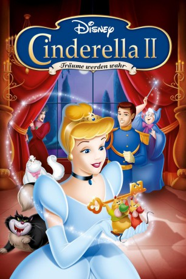

gesehen am 22.01.2017
gesehen am 22.01.2017Alternativ: Cinderella II: Dreams Come True gesehen am 22.01.2017
 
 IMDB-Wertung: 5.0 / 10
IMDB-Wertung: 5.0 / 10  Metascore:
Metascore: 
Cinderellas Mäuse-Freunde schreiben und basteln für die frischgebackene Prinzessin ein Buch mit ihren lustigsten und spannendsten Erlebnissen, etwa über ihre ersten Tage am Hof: Eine zugeknöpfte Hofdame versucht Cinderella im Schnellverfahren das Benehmen bei Hof bei zu bringen. Doch Cinderella setzt sich schließlich durch und bereitet ein königliches Fest nach ihren eigenen Ideen vor. Der kleine Mäuserich lässt sich von der lieben Fee in einen Menschen verwandeln. Doch er muss erkennen, dass er eben eine Maus und kein Mann ist.
Jahr: 2002
Dauer: 73 Minuten
FSK: 0
Land: USA Studio: BVHETonspuren: DTS - ,
Untertitel:
Auflösung: 1080p (1920x1080) Größe: 3645 MB
Genre: Animation/Trick, Familie, Fantasy, Liebe
Regisseur: John Kafka
Drehbuch: Jill E. Blotevogel, Eddie Guzelian, Eddie Guzelian, Tom Rogers, Jule Selbo
Soundtrack: Michael Blakey, Michael Tavera
Darsteller:
 Jennifer Hale als Cinderella
Jennifer Hale als Cinderella Rob Paulsen als Jaq / The Baker / Sir Hugh / Grand Duke / Bert / Flower Vendor
Rob Paulsen als Jaq / The Baker / Sir Hugh / Grand Duke / Bert / Flower Vendor Corey Burton als Gus / Mert / Stable Hand
Corey Burton als Gus / Mert / Stable Hand Russi Taylor als Fairy Godmother / Mary Mouse / Beatrice / Daphne / Drizella / Countess Le Grande
Russi Taylor als Fairy Godmother / Mary Mouse / Beatrice / Daphne / Drizella / Countess Le Grande Susanne Blakeslee als Stepmother
Susanne Blakeslee als Stepmother Tress MacNeille als Anastasia / Pretty Woman
Tress MacNeille als Anastasia / Pretty Woman Holland Taylor als Prudence
Holland Taylor als Prudence Frank Welker als Lucifer / Bruno / Pom Pom
Frank Welker als Lucifer / Bruno / Pom Pom Jeff Bennett als Additional Voices
Jeff Bennett als Additional Voices Bob Bergen als Additional Voices
Bob Bergen als Additional Voices Rodger Bumpass als Additional Voices
Rodger Bumpass als Additional Voices Paul Eiding als Additional Voices
Paul Eiding als Additional Voices Sherry Lynn als Additional Voices
Sherry Lynn als Additional Voices Phil Proctor als Additional Voices
Phil Proctor als Additional Voices Jennifer Darling als Additional Voices
Jennifer Darling als Additional VoicesDatei: X:\Kinder Disney HD\Cinderella\Cinderella 2 - Träume werden wahr (2002, FSKo.Al., 1920x1080).mkv seit 12.06.2015
Festplatte: Kinder-Filme+Trick
 Es gibt insgesamt 8 Filme in der Gruppe 'Kinder Disney HD\Cinderella'
Es gibt insgesamt 8 Filme in der Gruppe 'Kinder Disney HD\Cinderella'